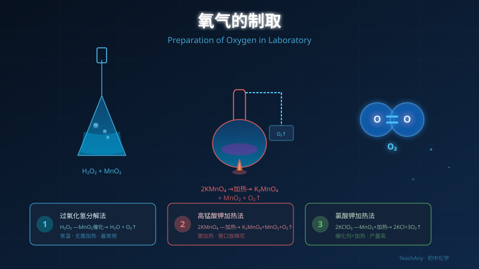

实验室和工业中如何获得纯净的氧气？
掌握两种实验室制氧方法，理解催化剂的作用与收集原理。

选一个最好奇的问题，课程将围绕它展开。
选择或输入后，本课围绕你的问题展开。
关于催化剂，以下说法正确的是？
反应原理：过氧化氢在二氧化锰催化下分解为水和氧气
MnO₂ 在反应前后质量不变、化学性质不变
只改变反应速率，不改变产物
常温即可反应，无需加热
操作简单安全
随开随关可控制产气速度
⚠️ 易错点：MnO₂ 不是反应物！它是催化剂，写方程式时标注在箭头上方，不写在反应物一侧。
反应原理：高锰酸钾在加热条件下分解生成锰酸钾、二氧化锰和氧气
试管口放棉花（防粉末进入导管）
试管口略向下倾斜（防冷凝水倒流炸裂试管）
先预热（酒精灯来回移动）
再集中加热固体部位
结束时先撤导管再熄灯
⚠️ 关键操作顺序：收集完毕后，必须先将导管从水中撤出，再熄灭酒精灯。否则水会倒流进热试管，导致试管炸裂！
选择装置的核心依据：反应物状态 + 反应条件（发生装置）；气体性质（收集装置）
| 类型 | 适用条件 | 典型实验 | 装置特点 |
|---|---|---|---|
| 固液常温型 | 固体+液体，不加热 | H₂O₂ + MnO₂ | 锥形瓶 + 分液漏斗 |
| 固体加热型 | 固体，需要加热 | KMnO₄ 加热 | 试管（口向下倾斜）+ 酒精灯 |
| 收集方法 | 适用气体 | O₂ 可用？ | 原理 |
|---|---|---|---|
| 排水集气法 | 不易溶于水 | ✅ 推荐 | O₂ 不易溶于水 |
| 向上排空气法 | 密度 > 空气 | ✅ 可用 | O₂ 密度 1.429g/L > 空气 |
| 向下排空气法 | 密度 < 空气 | ❌ 不可 | O₂ 比空气重 |
选择制氧方法，点击"开始实验"观察气泡产生过程
就绪 — 点击"开始实验"观察现象
口诀记忆："查—装—定—点—收—离—熄" 七字口诀
⚠️ 为什么"先离后熄"？如果先熄灯，试管内温度降低→气压减小→水槽中的水沿导管倒流进热试管→试管炸裂！
| 对比项 | H₂O₂ + MnO₂ | KMnO₄ 加热 |
|---|---|---|
| 反应物状态 | 液体 + 固体催化剂 | 固体 |
| 反应条件 | 常温，加催化剂 | 加热 |
| 发生装置 | 固液常温型 | 固体加热型 |
| 操作难度 | ⭐ 简单 | ⭐⭐⭐ 较复杂 |
| 安全性 | ⭐⭐⭐ 高 | ⭐⭐ 中 |
| 产气可控性 | 随时控制（开关分液漏斗） | 不易精确控制 |
| 特别注意 | MnO₂ 可回收重复使用 | 试管口放棉花；先离后熄 |
💡 考试提示：若无特殊说明，优先选择 H₂O₂ + MnO₂ 法（简单安全环保）。KMnO₄ 法常用于考查"加热固体制气"的装置知识。
• 未放棉花 → 粉末堵塞导管
• 先熄灯后撤管 → 水倒流炸裂
• 刚冒气泡就收集 → 气体不纯
• 试管口向上 → 冷凝水倒流
• 试管口放一小团棉花
• 先撤导管，后熄酒精灯
• 气泡连续均匀后才收集
• 试管口略向下倾斜
• 检验：带火星木条伸入，复燃
验满方法：将带火星的木条放在集气瓶瓶口（不是伸入），若复燃，说明已收集满。
检验 vs 验满区别：检验→伸入瓶中；验满→放在瓶口。
原理：利用液态氮（沸点 -196°C）和液态氧（沸点 -183°C）的沸点不同进行分离
空气 → 加压降温液化 → 蒸发
N₂ 先蒸发（沸点低），O₂ 后蒸发
分别收集即得纯净气体
• 属于物理变化（无新物质）
• 产量大，适合工业需求
• 成本低于化学方法
⚠️ 考点辨析：工业制氧（分离液态空气）是物理变化；实验室制氧（H₂O₂ 分解、KMnO₄ 分解）是化学变化。
通过 PhET 交互仿真，直观观察催化剂如何降低活化能、加速化学反应。尝试对比有无催化剂时的反应速率差异。
💡 操作提示：
• 选择"单次反应"标签页，观察分子碰撞和反应过程
• 调整温度滑块，观察温度如何影响反应速率
• 思考：MnO₂ 催化 H₂O₂ 分解的微观本质就是降低了反应的活化能
判断以下实验应该选择哪种装置和收集方法
Q1. 用 H₂O₂ 和 MnO₂ 制 O₂，选什么发生装置？
Q2. 加热 KMnO₄ 制 O₂，选什么发生装置？
Q3. 收集 O₂ 最推荐哪种方法？
Q4. 排水法收集时，何时开始收集？
Q5. KMnO₄ 法试管口放棉花的目的？
Q6. 如何检验气体确实是 O₂？
下列说法错误的是？
点击右下角的 AI 助手按钮，随时就本课内容提问。AI 老师将根据你选择的问题，为你个性化解答。
💡 推荐提问方向：
• 为什么 MnO₂ 可以反复使用？催化剂的微观原理是什么？
• 除了 MnO₂，还有什么可以催化 H₂O₂ 分解？
• 排水法为什么比向上排空气法纯度更高？
• 制 CO₂ 的装置和制 O₂ 有什么异同？